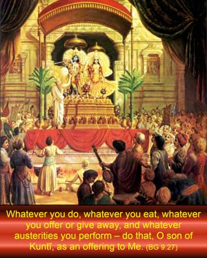
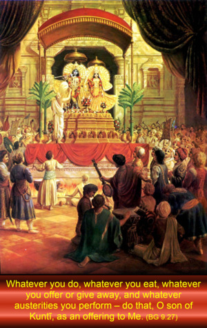

Whatever you do, whatever you eat, whatever you offer or give away, and whatever austerities you perform – do that, O son of Kuntī, as an offering to Me.


Thus, it is the duty of everyone to mold his life in such a way that he will not forget Kṛṣṇa in any circumstance. Everyone has to work for maintenance of his body and soul together, and Kṛṣṇa recommends herein that one should work for Him. Everyone has to eat something to live; therefore he should accept the remnants of foodstuffs offered to Kṛṣṇa. Any civilized man has to perform some religious ritualistic ceremonies; therefore Kṛṣṇa recommends, “Do it for Me,” and this is called arcana. Everyone has a tendency to give something in charity; Kṛṣṇa says, “Give it to Me,” and this means that all surplus money accumulated should be utilized in furthering the Kṛṣṇa consciousness movement. Nowadays people are very much inclined to the meditational process, which is not practical in this age, but if anyone practices meditating on Kṛṣṇa twenty-four hours a day by chanting the Hare Kṛṣṇa mantra round his beads, he is surely the greatest meditator and the greatest yogī, as substantiated by the Sixth Chapter of Bhagavad-gītā.